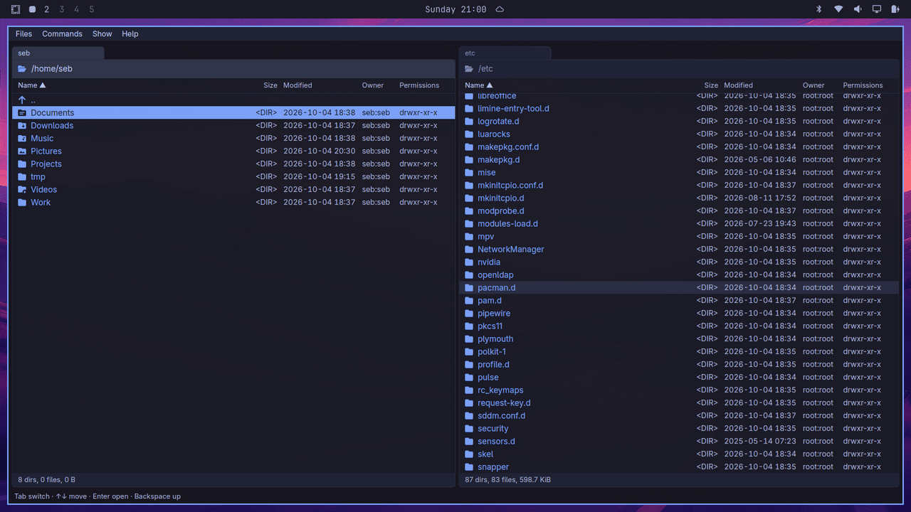

The keys your fingers already know
Total Commander's keymap, on every platform. Ctrl, not Cmd, on the Mac, so the same muscle memory works on both.
- F3
- View. Multi-GB files open instantly, as text, hex or formatted Markdown.
- F4
- Edit in your own editor, such as
code --wait. - F5 F6
- Copy or move to the other panel, in the background, with a prompt per conflict.
- F7
- New folder.
a/b/cmakes all three. - F8
- Move to the trash. Shift-F8 deletes for good.
- F2
- Rename, with the name selected up to its extension.
- Shift-F4
- New file, opened in your editor.
- Alt-F7
- Find files by name and content, then feed the results to a panel.
- Alt-F5 Alt-F9
- Pack into a zip, or unpack zip and tar archives.
- Ctrl-D
- Your folder hotlist, each entry on its own letter.
- Ctrl-F
- Connect to a host from your
~/.ssh/config. - Alt-F1 Alt-F2
- Drives and mounts for the left or right panel.
- Ctrl-T Ctrl-W
- Open and close tabs on either side.
- Alt-Z Ctrl-U
- Show this folder on the other side, or swap the sides.
- Shift-Enter
- Open with any application your desktop registers for the file.
- Ctrl-Shift-T
- Open a terminal in the current folder.
The full keymap is in the spec.
What else it does
Remote folders over SFTP
Browse, copy and move between machines through your own ssh. Aliases, keys, the agent and jump hosts work as they do in a terminal, and password prompts come up in the app.
A viewer for big files
F3 reads by byte position, never the whole file, so a 10 GB log opens at once. Search, select and copy, switch to hex, or read Markdown formatted with its local images.
Archives as folders
Enter on a zip or tarball opens it like a folder. View or copy entries out; encrypted zips ask for the password. Extraction never writes outside its folder.
The Git branch, without the wait
Inside a repository the path header shows main ↑2 ↓1 •: commits ahead and behind, and a dot when something changed. It arrives after the listing, so no folder waits for git.
Never frozen by a folder
Folders load in the background, so a huge directory or a dead network mount never locks up the window. Panels follow changes other programs make.
Plain settings
Five themes, two zoom levels and a TOML config file you can edit by hand. An optional log records every file operation. Nothing phones home: updates are checked only when you ask.

Install
For macOS (Apple Silicon and Intel) and Linux (x86_64, glibc 2.35 or newer). It installs for you alone, no root needed, and the same line updates it.
curl -fsSL https://github.com/sebbarg/yagni-commander/releases/latest/download/install.sh | sh
What the script does
- Downloads the latest release and checks it against its
SHA256SUMS. - macOS: puts
yagni-commander.appin~/Applications. - Linux: puts the binary, a launcher entry and the icons in
~/.local. - Add
-s -- --uninstallaftershto remove it.
Prefer to do it yourself
- Read the script first. It is short.
- Download the zip or tarball from Releases.
- Or build it from source with Rust.
You ain't gonna need it
yagni-commander does the fifth of a classic commander you reach for every day, and leaves the rest out on purpose, so it stays focused. It is tested on macOS, KDE Plasma (X11 and Wayland) and Omarchy. Bug reports are welcome. Feature requests might get a YAGNI.
It stands on the shoulders of:
- Norton Commander1986
- DOS Navigator1991
- Total Commander1993
- Double Commander2007